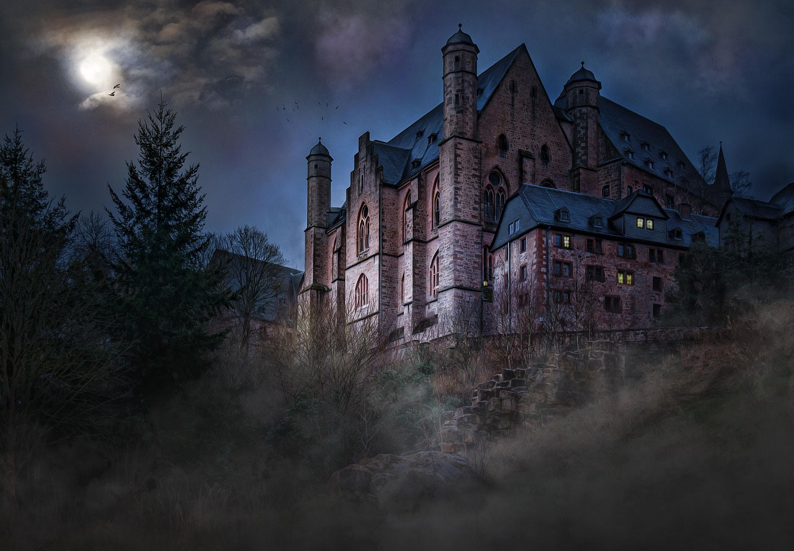

You found the bonus scene!
Thank you for reading The Incubus Teahouse. I hope you enjoyed your time at Gilded Leaf—and that you're not quite ready to leave Edna, Damien, and the others behind.
As a little thank-you for reading, here's a scene that takes place shortly after the events of the novel.
Extra Scene for The Incubus Teahouse
Edna
“Damien, if you put the flowers there, my father will keep on watching them the whole day and wonder what you are trying to hide,” I said.
He had one of the flower arrangements on the counter of Guilded Leaf. The counter looked weirdly empty without all the pastries and piles of plates, saucers, and teacups. But they’d had to go to the back room for the wedding party tomorrow.
“I am trying to hide the stain on the samovar,” Damien said, looking back at me.
“You shouldn’t. It is intentional. Right, Lucian?” I asked the other incubus.
Lucian cleared his throat up on the ladder where he was nailing some decorations with Selena helping him while Valdemar surveyed the whole affair with smug contentment. “It is intentional. Part of the charm. No need to cover it. That will only make it look less intentional.”
“Will your father think even less of me with a stained samovar?” Damien asked. He wasn’t usually so timid, but my father could be… intimidating.
I scoffed. “He’ll likely think less of me since I have not polished it to shine while working here. Let it be. If he cannot appreciate Gild the way it is, he doesn’t have to.”
“I am trying to improve his image of me,” Damien said.
“I’m not sure if that will work,” I commented. “But honestly, I don’t care.”
Their first meeting had not been the most amiable possible.
I had not told my family about my living arrangements when I had decided to stay in Aldermere. At first, I had been so undecided. Damien was a demon after all. It had taken me a long time to really come to terms with my feelings, his feelings, his nature, and all of that even though I had learned to love my new life in Aldermere and Gild very quickly.
But I had postponed the final decision to stay and make it permanent.
Until my father had arrived on a surprise visit two weeks ago.
He’d barged into the teahouse, perfectly composed at first, the mouth under the big grey musctache in a faint smile.
The smile had vanished when he had realized that my domestic arrangement included living together with a man. In the same room.
“This is totally unseemly, Edna,” he had growled. “Despite your weird obsessions after you lost Gareth and Aiden, I had thought you sensible enough to care for your reputation. You either marry that man as soon as possible or I will drag you home with me.”
He would not have been able to force me back home against my will, but he could have made my life more complicated than it already was. I did not want to sever my ties to him or my siblings even if I did not see them often. I did not want Aldermere to pay attention to my unmarried status and start to shun the teahouse.
So Damien and I had started to arrange the wedding with haste. My father had pushed us to make the decision I had already made but had been afraid to voice.
And the day would be tomorrow.
“But I’d like to get along with your family,” Damien said.
“I know,” I replied. “But I do not want you to pretend for them. Except for the demon part.”
Damien huffed. “I’m not going to tell them about that, naturally.”
We both hoped his demonic nature would not become an issue. For the most part it was easy for him to pretend to be human though he would age slightly slower than I, I had learned. The incubi tended to live over one hundred years, even up to one hundred and fifty. But we hoped my family would not pay attention to the fact that he would remain youthful for his age. His identification papers claimed he was only twenty-eight which was five years younger than me. It might be enough for my family.
Though I was still contemplating if I should tell my sister Eliza about Damien’s true nature. She’d always been closest to me and the only one who had believed me when I had told them about the existence of demons after I had started to train as a demon hunter. The rest had thought I was just stricken with grief and not quite right in my head.
But I would not do that on my wedding day. Perhaps later.
I noticed how Valdemar made a round in the front room, as if inspecting the place. His gaze was too perceptive for a mere cat. Sometimes I wondered about him.
Now he fixed his green eyes on the new painting Damien had hung on the wall of the room. It showed a meadow in summer, all pink and yellow flowers beneath a pale blue sky. It was undeniably pretty, and the artist had an eye for detail. I could even see a ladybug on one of the daffodils, so lifelike that I would not have been surprised to see it take flight.
Valdemar jumped on the table nearest to the painting, just barely missing the arrangement of snowdrops and fern.
He was still staring at the painting.
“Valdemar,” I said. “You are being weird. It is just a painting.”
Damien glanced at the cat. “He is just admiring it.”
“No, I recognize that look.”
“Now you can read cats?” Damien asked.
“I read that one cat pretty well,” I shot back.
I saw Valdemar’s decision to pounce before it happened, but I had no time to do anything about it.
His paw swiped the painting cleanly down from the wall.
Damien let out a surprised yelp as the frame gave out a sharp crack when it hit the floor.
“Damn cat!” he exclaimed. “You can’t be serious!”
He went to retrieve the painting from the floor right next to the hearth.
I got the impression that perhaps Valdemar had attempted to get it on the still glowing embers.
The frame was clearly broken in two places.
Valdemar started to wash one paw, as if even touching the painting had dirtied it.
I pressed my lips tightly together.
Selena turned her face away from the scene, but her shoulders shook.
“Don’t you dare laugh,” Damien said. “He just… broke it!”
“I’m not laughing,” I said.
“You practically are.”
“Definitely not,” I said and managed to get my face in order.
Selena stepped to look at the painting in Damien’s hands.
“I think it can be glued back together,” she said.
“It will not be the same,” Damien groaned. “And I do not have suitable glue right now. We cannot have this on the wall tomorrow.”
I tiptoed closer and surveyed the damage. No, it could not be rehung as it was. The frame would not hold.
The meadow still looked lovely. The yellow daffodils caught the lamplight, and the pink cuckooflowers gave it a delicate air against the green grass.
I glanced at the place where it had hung against dark polished wood. There was a section of dark green wallpaper next to it with a brass gaslamp.
“You know, I’m not quite sure if it suited the room,” I said slowly.
Damien looked at me. His face showed a mix of affront and disbelief.
“You don’t?” he asked.
“It is rather bright and cheerful. Gild isn’t really bright and cheerful.”
“I thought it would add some lightness to the place,” he said, turning the painting in his hands though that made the broken pieces of the frame misalign even worse and him curse. “And I thought you liked it.”
“I do like it.”
“You said it was pretty.”
“And it is. But it just does not belong in this room. Gild is not some airy and bright place where we have paintings of meadows on the walls brightening the place. You made this dark and gothic on purpose. There is even a gargoyle statue by the door,” I explained.
“There were two of them until Damien dropped one,” Lucian mentioned.
“Thanks, I really needed a reminder of that,” Damien shot back. Then he looked at the painting again. “But… I suppose you are right. This is not the right piece for Gild.”
“I’m happy we agree,” I said.
“Aren’t husbands supposed to agree with their wives over everything?” he asked with some of his usual grin.
“That would be the best way to keep the wife happy,” I answered. “Though we still need to go through the ceremony tomorrow.”
“Though now I have to decide on what to do with this one,” Damien said. “Fortunately I paid next to nothing for it. Maybe I could donate it to the orphanage? The children could use a cheerful painting even with a glued frame.”
“Where did you get it?” Selena asked.
“Oh, there was this sale of an estate. Lots of art. The heirs were happy to get rid of everything. Apparently they do not care for art that much.”
“Talking of estates,” Selena put in, “did you know that Whitcombe Books next door will be for sale since old Mr. Whitcombe’s heirs do not want to take it over?”
“I hadn’t heard of that,” I said. Naturally I had heard that poor old Whitcombe had been found dead a month prior in his home. He’d been a sweet old man who had visited the teahouse at least once a week. The bookstore had been closed since then.
“Actually, I…” Selena began, “I’m considering buying it.”
“You are?” I asked. I also glanced at Lucian, who nodded lightly.
“I’ve got the inheritance my husband left me so I could afford it,” Selena explained. “I think. Depends a little on the price.”
“I didn’t know you liked books so much,” I blurted out.
She chuckled. “I do enjoy them. Especially if it is a good thesis. Though it’s more like… since I no longer have a plausible connection to any university, I need something to do. I need to feel a sense of accomplishment.”
“I am still doing my best to join the university staff,” Lucian mentioned.
He had taken more time off from his work in Gild so that he could attend lectures and discussions on the ancient Cernathians at the university, but that had not been a problem for us. Damien and I could handle things pretty well among the two of us. Sometimes three people in the teahouse was a crowd.
“Yes, dear,” Selena said to Lucian, “but even if you were hired, I’d forever be barely tolerated at your wing. I would still not be accepted as a scholar.”
“Perhaps when I’m working there, I could change things,” Lucian said.
“You’d like to allow women into academia?” I asked him.
“Of course,” Lucian answered. “Women are totally as capable of scientific thinking as men. Women are often scholars in the Nether.”
“There are many reasons I find you so alluring,” Selena said to him with a satisfied smile. “But I do not want to wait thirty years for that if it even ever happens.”
“So instead you consider opening a bookstore?” I asked.
“To me it seems perhaps the next best option,” Selena said with a shrug. “But we shall see. Someone else might bid higher.”
Something caught Valdemar’s attention then. His ears perked up and so did his tail. He trotted to the back wall which separated Gild’s front room from the bookstore on the other side. Then he lifted a paw against the wall and started to tap it.
I was not sure if I should have laughed or be extremely worried about the cat’s understanding.
Laughing was easier.
“Apparently Valdemar also thinks you should buy the bookstore,”I said.
Selena covered her mouth and let out a chuckle. “So it seems.”
Damien was still holding the painting in his hands, but then he shrugged. “I’ll take this to the back and look at gluing the frame. But not today.”
“No, not today nor tomorrow. I’d rather not think even the day after that,” I said. “Gild is closed, and I want to keep you in bed for as long as possible. Or at least until the luncheon my father hosts.”
“The painting won’t go anywhere in three days,” Damien promised and retreated into the back room behind the curtain for a moment. “I put it somewhere Valdemar cannot reach it.”
Valdemar glanced at him, accusingly.
“He’s a cat,” I reminded Damien. “I would not be so sure he cannot get to it if he wanted to.”
“Well, he shall not touch it further,” Damien said to the cat. “Or I’ll remove ham pie from the menu and add spinach pie instead. It is apparently gaining favor in the capital.”
“I think you got his attention,” I chuckled.
Valdemar did indeed turn fully from the wall and sat down with his ears partly turned away. If there ever was a displeased cat, that was Valdemar at that moment.
“Oh, Valdemar is such a good boy that he will not touch the painting now that it is no longer on the wall, right?” Selena crooned to the cat and went to give him some scratches behind the ears. Then she turned to look at the wall beyond the ladder where the ribbons she and Lucian had been attaching them. “Does that look acceptable?”
I inspected the red cloth there. “It does add festivity without ruining the overall atmosphere here. I like it.”
“Good,” Selena said. “So are we done with the decorations, then?”
I turned to look at everything. Gild looked much like it had the day I had first stepped in hoping to read local newspapers where I could find hints on the whereabouts of the Beheader. When I had met the infuriatingly attractive owners of the place and the cat who loved ham pie.
But there were additions of some flowers, ribbons, and tablecloths covering the slightly more worn tables. They did not alter the place, just tidied it up a little. The spirit of the place remained intact.
“I think it looks excellent,” Damien said with a grin, and wrapped an arm around my shoulders.
I smiled back at him. “Yes, it does.”
Lucian cleared his throat and pulled a folded piece of paper from his pocket. “Then I suppose it is time to go through tomorrow’s timeline again.”
“Didn’t we go through it already?” Damien groaned.
“That was three days ago and without some specifications,” Lucian commented as he unfolded the paper.
I smiled to myself. Those two were just like always: Lucian keeping everything in order and Damien being totally content winging things. They balanced each other.
“Soon after sunrise, Selena and I will come back with breakfast. Then we will help you get ready for the ceremony.”
“I don’t need any help,” Damien muttered.
“You do,” Lucian said. “Your hands shake when you are nervous, and we’d all prefer that you do not have cuts on your face from shaving tomorrow. I’ll do the shaving. And you have the tendency to tie your neck scarf askew. It is fine on a normal day, but tomorrow is not a normal day.”
Damien turned to me, incredulous. “Are my neck scarves askew?” he asked me.
“Just a little bit,” I admitted. “But it’s cute.”
Damien groaned but managed a smile. “Well, I suppose that is the most important thing.”
“I’ll help with Edna’s hair,” Selena said.
“And that is a blessing,” I said. No, I was not used to doing much with my hair. Something fitting my wedding—as small as it was going to be—was not in my repertoire.
“We will need to leave for the cathedral quarter past eleven so that we are well in time before the ceremony takes place at noon,” Lucian continued.
“Who is going to let Millie and Anabel in here?” I asked.
“Oh, they’ll be here before eleven,” Selena said. “And Millie explicitly said they will take care of everything related to food without our help.”
“Then they will,” I agreed. Millie was efficiency impersonated.
“We should be back here in Gild by two when we have dinner,” Lucian continued. “Then the speeches by me and Edna’s father, some dancing, tea and cake, some more dancing, and then we should be done.”
“Except for my father’s luncheon,” I added with a grimace.
“Technically it is the day after,” Lucian said.
“But still part of the festivities,” I corrected. “With another new dress and all. Honestly, I envy you men. You do not have to come up with new outfits for all situations.”
“My suit is new,” Damien mentioned.
“It is, but it barely differs from your previous suits. Mainly the neck scarf. I had to get two new outfits. I’m not actually a fan of fittings at a tailor’s shop.”
“Though Anabel actually did a great job altering the second dress,” Selena said. “That girl knows how to drape cloth the best way possible. She’d likely be able to make a grain sack look fashionable.”
“You’re not wrong,” I admitted. With our tight timeline and some budget considerations had led to me buying a dress which was not quite right. Anabel had made it right. Now I was actually looking forward to wearing it even though normally I appreciated simpler and more practical clothing.
“Though I have to say that I wonder what your father is thinking about all this,” Selena said.
“All of what?” I asked.
“Your quick wedding to Damien. You getting married again overall. I suppose he still expects to get more grandchildren.”
I raised an eyebrow. “He has enough grandchildren. I do not think he expects anything. I think there are… eight of them? Shouldn’t that be enough?”
“Old people can be pretty obsessed about grandchildren,” Selena said with a shrug. “My father certainly was very upset when he got none.”
“Well, my father has to swallow his disappointment,” I said.
Though so did I. Perhaps the only disappointment in this whole thing.
I had loved being a mother to Aiden. And disappointed there had not been younger siblings though I had assumed eventually Gareth and I would have been blessed with one or two though it had never happened.
I loved Damien, but no children would come of our union. He’d made it clear that despite his human appearance, humans and demons did not mix like that.
For the most part I was fine with that. A life without the responsibilities of a parent was easier. Though there was also the nagging hole at the back of my mind. During the years of training and tracking down the killer of my family, I had not thought about even the possibility of more children. I’d only thought about what I had lost.
“Unfortunately, fathers have a tendency to communicate disapproval and disappointment without words,” Damien said.
“They do,” I agreed. “But fortunately mine will not be present too often.”
His parents in the Nether had no idea that he was getting married. We’d agreed that he’d send word at some point, but communication between our world and the Nether was not regular and easy. We’d assumed that they would not have tried to attend anyway. It would have been a huge risk for everyone involved. They would not have had any idea on how to behave here, no right clothing, no plausible background story. We claimed that Damien was an orphan with a genteel background. No close relatives that he could invite on such short notice.
“I hope you are not offended, but I do not mind that too much,” Damien said.
I barked out a laugh. “No. I love him, but it is easier from some distance away.”
“Good. Though I’m still looking forward to meeting your siblings.”
“I wouldn’t be if I were you. Except for Eliza. But tomorrow you’ll see them and the day after that they will bombard you with questions and demands. I hope you have your story straight.”
“It has been ever since we got Gild,” he said as if offended. “We are not sloppy.”
“No, but sometimes you just like to wing it instead of plan it.”
He grinned. “And it looks like it has worked just fine for me. I lured in an adorable huntress,” he said, and turned to give me a kiss on the cheek.
I looked at him incredulously. A peck on the cheek?
It was my turn to pull him into a proper kiss. As if Lucian and Selena had not seen those before.
“Yes, you lured me in, you rascal. And tomorrow it will be official.”
Join my newsletter
If you'd like to stay updated on my latest releases and writing updates, sign up for my newsletter!
